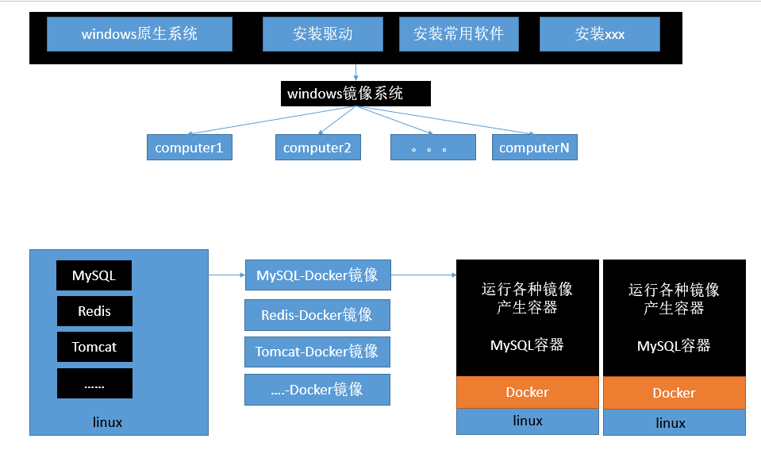

一、简介
Docker是一个开源的应用容器引擎，是一个轻量级容器技术；基于Go语言并遵循Apache2.0协议开源。
Docker可以让开发者打包他们的应用以及依赖包到一个轻量级、可移植的容器中，然后发布到任何流行的Linux机器上，也可以实现虚拟化。容器是完全使用沙箱机制，相互之间不会有任何接口，更重要的是容器性能开销极低。
Docker支持将软件编译成一个镜像；然后在镜像中各种软件做好配置，将镜像发布出去，其他使用者可以直接使用这个镜像；
运行中的这个镜像称为容器，容器启动是非常快速的。类似Windows里面的ghost操作系统，安装好后就什么都有了。


二、核心概念
docker主机(Host)：安装了Docker程序的机器（Docker直接安装在操作系统之上）；
docker客户端(Client)：连接docker主机进行操作；
docker仓库(Registry)：用来保存各种打包好的软件镜像；
docker镜像(Images)：软件打包好的镜像；放在docker仓库中；
docker容器(Container)：镜像启动后的实例称为一个容器；容器是独立运行的一个或一组应用

使用Docker的步骤：
1）、安装Docker
2）、去Docker仓库找到这个软件对应的镜像；
3）、使用Docker运行这个镜像，这个镜像就会生成一个Docker容器
4）、对容器的启动停止就是对软件的启动停止；
三、安装Docker
1、安装linux虚拟机
1）、VMWare、VirtualBox（安装）；
2）、导入虚拟机文件centos7-atguigu.ova；
3）、双击启动linux虚拟机;使用 root/ 123456登陆
4）、使用客户端连接linux服务器进行命令操作；
5）、设置虚拟机网络：桥接网络===选好网卡====接入网线；
6）、设置好网络以后使用命令重启虚拟机的网络
1 | service network restart |
7）、查看linux的ip地址
1 | ip addr |
2、在linux虚拟机上安装Docker
步骤：
1、检查内核版本，必须是3.10及以上uname -r
2、安装dockeryum install docker
3、输入y确认安装
4、启动docker
1 | [root@localhost ~]# systemctl start docker |
5、开机启动docker
1 | [root@localhost ~]# systemctl enable docker |
6、停止docker
1 | systemctl stop docker |
四、Docker常用命令&操作
1、镜像操作
| 操作 | 命令 | 说明 |
|---|---|---|
| 检索 | docker search 关键字 eg：docker search redis | 我们经常去docker hub上检索镜像的详细信息，如镜像的TAG。 |
| 拉取 | docker pull 镜像名:tag | :tag是可选的，tag表示标签，多为软件的版本，默认是latest |
| 列表 | docker images | 查看所有本地镜像 |
| 删除 | docker rmi image-id | 删除指定的本地镜像 |
具体细节查阅：https://hub.docker.com/
2、容器操作
软件镜像（QQ安装程序）—-运行镜像—-产生一个容器（正在运行的软件，运行的QQ）；
步骤：
1、搜索镜像
1 | [root@localhost ~]# docker search tomcat |
2、拉取镜像
1 | [root@localhost ~]# docker pull tomcat |
3、根据镜像启动容器
1 | docker run --name mytomcat -d tomcat:latest |
4、查看运行中的容器
1 | docker ps |
5、 停止运行中的容器
1 | docker stop 容器的id |
6、查看所有的容器
1 | docker ps -a |
7、启动容器
1 | docker start 容器id |
8、删除一个容器
1 | docker rm 容器id |
9、启动一个做了端口映射的tomcat
1 | [root@localhost ~]# docker run -d -p 8888:8080 tomcat |
-d：后台运行
-p: 将主机的端口映射到容器的一个端口 主机端口:容器内部的端口
10、为了演示简单关闭了linux的防火墙
service firewalld status ：查看防火墙状态
service firewalld stop：关闭防火墙
11、查看容器的日志
1 | docker logs container-name/container-id |
更多命令参看https://docs.docker.com/engine/reference/commandline/docker/可以参考每一个镜像的文档
3、安装MySQL示例
1 | docker pull mysql |
错误的启动，启动之后是用不了的
1 | [root@localhost ~]# docker run --name mysql01 -d mysql |
正确的启动
1 | [root@localhost ~]# docker run --name mysql01 -e MYSQL_ROOT_PASSWORD=123456 -d mysql |
做了端口映射
1 | [root@localhost ~]# docker run -p 3306:3306 --name mysql02 -e MYSQL_ROOT_PASSWORD=123456 -d mysql |
几个其它的高级操作
1 | docker run --name mysql03 -v /conf/mysql:/etc/mysql/conf.d -e MYSQL_ROOT_PASSWORD=my-secret-pw -d mysql:tag |